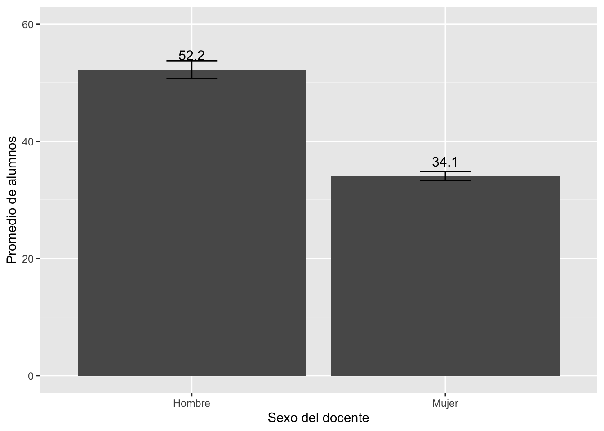
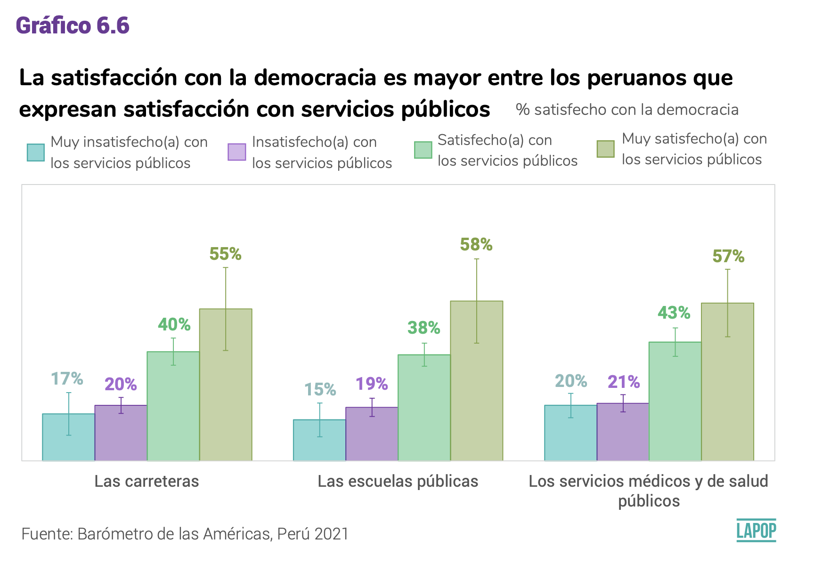
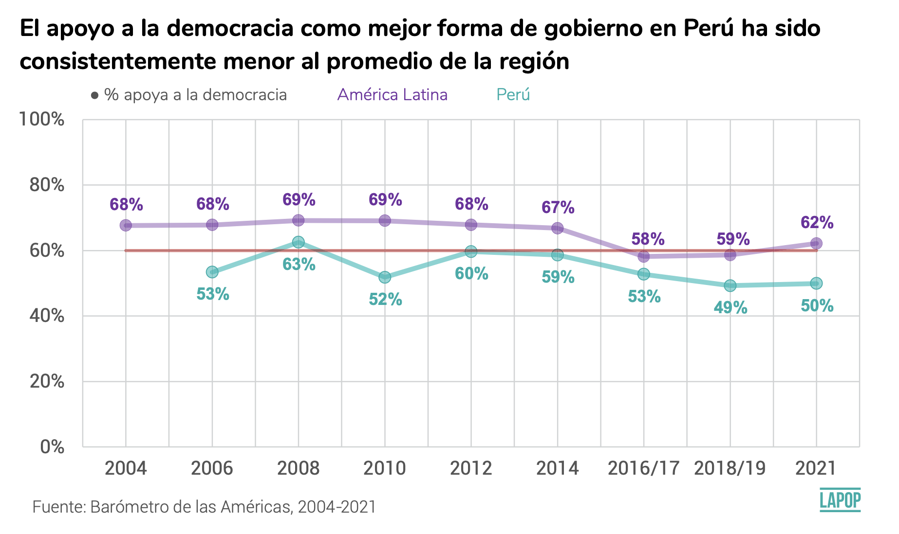
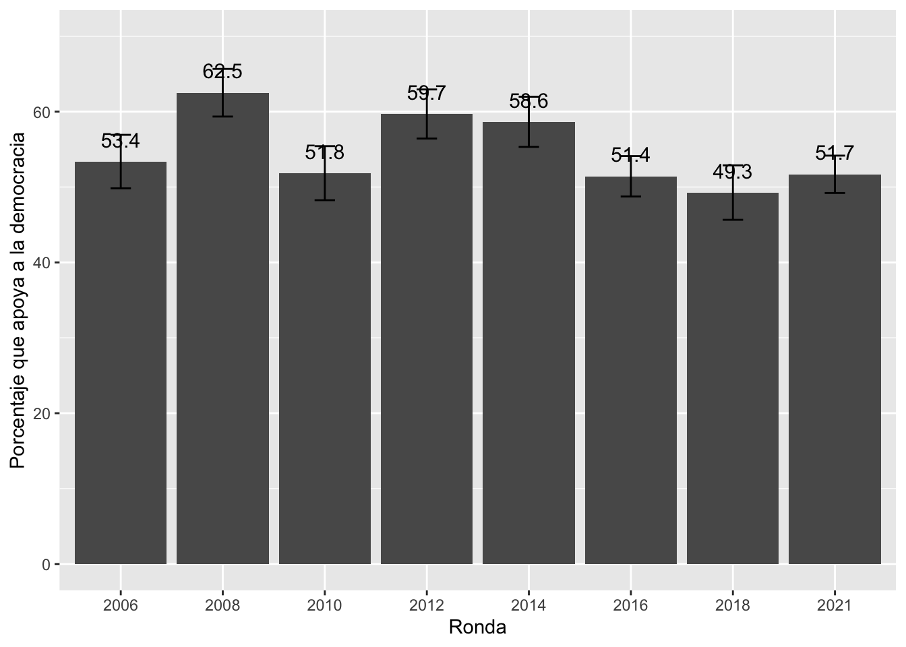

Pruebas de significancia
Es una de las técnicas más usadas para el análisis en ciencias
sociales. Sirve, por ejemplo, para comparar entre grupos:
Comparar la media de ingresos de hombres y mujeres
Comparar la proporción de personas que votarán a candidato X por
Lima y en Regiones
Comparar los ingresos de profesores en la gestión pública y en la
gestión privada
La idea es comparar las estimaciones puntuales entre ambos grupos y
también poder extrapolar estas diferencias a la población.
Vamos a comenzar por comparaciones entre solo 2 grupos (por el
momento), que corresponde a una variable binaria o dicotómica, como sexo
(hombres/mujeres), ámbito (urbano/rural), gestión educativa
(pública/privada).
Para mostrar un ejemplo, vamos a usar el trabajo de (Galarza, Kogan, and Yamada 2012) que evalúa la
discriminación en el mercado laborar entre hombres y mujeres. Estos
autores enviaron CVs con exactas cualificaciones a ofertas reales de
trabajo, variando solo el nombre del aplicante, con nombres de hombres y
mujeres. La variable de respuesta es la tasa de respuesta a estos CVs,
es decir, de cuántos CVs enviados se recibió una llamada para una
entrevista.
En cualquier prueba de significancia se tiene que presentar una
hipótesis nula, que generalmente es la hipótesis de no diferencias o de
no efectos. Este trabajo parte de una idea que existe una discriminación
de género en el mercado laboral, por lo que la hipótesis nula indicaría
lo contrario. En el caso de este trabajo se tendría:
H0: Tasa de respuesta a CVs de hombres = Tasa de respuesta a CVs de
mujeres
o lo que es lo mismo
H0: Tasa de respuesta a CVs de hombres - Tasa de respuesta a CVs de
mujeres = 0
En ese trabajo se presenta el siguiente cuadro de resultados:

En la muestra total de 2,228 CVs enviados, mitad de CVs con nombres
de hombres y la otra mitad con nombres de mujeres, todos con las mismas
cualificacions, se tiene que la tasa de respuesta para los CVs de
hombres es 13.4% y para los CVs de mujeres es 11.1%.
De acuerdo a las estimaciones puntuales, efectivamente, los hombres
tienen una mayor tasa de respuesta a sus CVs que las mujeres, a iguales
cualificaciones. Esta conclusión, sin embargo, es solo para las 2,228
observaciones de la muestra. ¿Cómo extrapolar esta conclusión a la
población? ¿Toda diferencia puntual se validaría en la población?
Comparación de intervalos de confianza por grupos
Una primera forma “informal” para extrapolar las diferencias en las
estimaciones puntuales de la muestra a la población es construyendo los
intervalos de confianza para la media o para la proporción por cada uno
de los subgrupos.
En este caso, por ejemplo, significaría construir el IC de la tasa de
respuesta para hombre y mujeres.
Pregunta: ¿Se pueden construir los IC de cada grupo con los datos de
la tabla?
Cada IC sería una extrapolación del parámetro, es decir, el rango de
valores de la tasa de respuesta a los CVs de hombres para todo el
mercado laboral al 95% de confianza. Lo mismo para la tasa de respuesta
de las mujeres.
Una vez construidos los IC, se analiza si estos intervalos se cruzan
o no se cruzan. La regla de decisión “informal” es:
Si los IC de ambos grupos se cruzan, entonces no se puede afirmar
que el parámetro de un grupo sea mayor o menos que el parámetro del otro
grupo.
Si los IC de ambos grupos NO se cruzan, entonces se puede
afirmar, al 95% de confianza, que el parámetro de un grupo es
mayor/menor al parámetro del otro grupo.
Ejemplo para una variable numérica
Siguiendo con el ejemplo de la ENDO 2020, la hipótesis que se puede
evaluar es si los profesores atienden a diferente número de alumnos de
acuerdo a su sexo. Como vimos antes, las comparaciones puntuales
sugieren diferencias, donde los docentes hombres atienden a más alumnos
que las docentes mujeres.
La hipótesis cero sería:
Ho: Promedio de alumnos que acompaña un docente hombre = Promedio de
alumnos que acompaña una docente mujer.
library(rio)
endo2020 = import("bases/ENDO_REMOTO_2020.dta")
La variable P1_1 (sexo del docente) está definida originalmente como
una variable numérica (esto se puede comprobar con el código
str(endo2020$P1_1). Esta variable, sin embargo es de tipo
factor.
Se puede crear una nueva variable “sexo” con la variable transformada
y etiquetada.
library(dplyr)
library(tidyverse)
endo2020 = endo2020 |>
mutate(sexo = factor(P1_1, labels=c("Hombre", "Mujer")))
alumxsexo = endo2020 |>
group_by(sexo) |>
summarize(Media = mean(P1_6, na.rm = T),
Desv.Std = sd(P1_6, na.rm = T))
alumxsexo
## # A tibble: 3 × 3
## sexo Media Desv.Std
## <fct> <dbl> <dbl>
## 1 Hombre 52.2 60.4
## 2 Mujer 34.1 44.2
## 3 <NA> NaN NA
Se encuentra que los docentes hombres acompañan a 52 alumnos en
promedio, en comparación con las docentes mujeres que acompañan a 34
alumnos en promedio, es decir 18 alumnos menos en promedio.
Recordemos que el cálculo del intervalo de confianza de una media
es:
\[
IC = \bar{X} \pm 1.96 * \frac{s} {\sqrt{n}}
\]
Para una comparación usando los intervalos de confianza, se puede
usar el comando ciMean de la librería lsr.
Este comando regresa el límite inferior y el límite superior del
intervalo de confianza. Por lo tanto, para guardar solo el mínimo se
tiene que especificar lsr::ciMean(P1_6, na.rm=T)[1] y para
el máximo cambiaría a [2].
library(lsr)
ci_alumxsexo = endo2020 |>
group_by(sexo) |>
summarise(media = mean(P1_6, na.rm=T),
liminf = ciMean(P1_6, na.rm=T)[1],
limsup = ciMean(P1_6, na.rm=T)[2]
)
ci_alumxsexo
## # A tibble: 3 × 4
## sexo media liminf limsup
## <fct> <dbl> <dbl> <dbl>
## 1 Hombre 52.2 50.7 53.8
## 2 Mujer 34.1 33.3 34.8
## 3 <NA> NaN NA NA
El IC al 95% de confianza, el promedio de alumnos que acompañan
los docentes hombre está en el siguiente intervalo \[50.7 - 53.8\]
El IC al 95% de confianza el promedio de alumnos que acompañan
las docentes mujeres está en el siguiente intervalo \[33.3 - 34.8\]
Como ambos intervalos NO se traslapan (el mayor valor del segundo IC,
34.8 , es menor al mejor valor del primer IC, 50.7), entonces se puede
afirmar que esas diferencias se pueden extrapolar la población.
Si los IC se traslapan, entonces, no se puede afirmar que existan
diferencias en el número de alumnos que acompañan docentes hombres o
mujeres (sería un “empate técnico”).
Gráfico de IC para comparar medias
Se puede graficar ambos intervalos de confianza. Para hacer esto,
usaremos la tabla que guarda los datos de los intervalos de
confianza.
Esta tabla, sin embargo, tiene una fila de resultados para los
valores perdidos. Esta fila no tiene datos por graficar, por lo que
tenemos que eliminarla.
Los dataframes se organizan en filas y columnas. La table
“ci_alumxsexo” tiene 3 filas y 3 columnas. La tercera fila es la que no
tiene datos que graficar. Para eliminar se tiene que especificar la
tabla y con los brackets [filas, columnas] definir los
datos a eliminar [-3, ]. Se elimina con el signo “-” y como
no hay datos luego de la “,”, se indica que no se cambia ninguna
columna.
ci_alumxsexo = ci_alumxsexo[-3,]
ci_alumxsexo
## # A tibble: 2 × 4
## sexo media liminf limsup
## <fct> <dbl> <dbl> <dbl>
## 1 Hombre 52.2 50.7 53.8
## 2 Mujer 34.1 33.3 34.8
Esta tabla se puede usar para crear un gráfico que compare ambos IC
con la librería ggplot2 y con la geometría
geom_errorbar. Se agrega geom_text para
incluir el “texto” con los valores promedio de ambos grupos.
library(ggplot2)
graf1 = ggplot(ci_alumxsexo, aes(x=sexo, y=media))+
geom_bar(stat="identity")+
geom_errorbar(aes(ymin=liminf, ymax=limsup), width=0.2)+
geom_text(aes(label=paste(round(media, 1))), vjust=-1, size=4)+
xlab("Sexo del docente") + ylab("Alumnos atendidos")+
ylim(0, 60)
graf1

En este gráfico queda más claro que ambos IC no se traslapan por lo
que se puede decir que sí existen diferencias entre docentes hombre y
mujeres en el número de alumnos que acompañan en el Perú.
Este tipo de gráfico es bastante usual en los reportes estadísticos.
Por ejemplo, se pueden ver este tipo de gráficos en los reportes de El
Pulso de la Democracia del proyecto LAPOP. En el último reporte para
Perú se presenta el siguiente gráfico que muestra los niveles de
satisfacción con la democracia entre grupos de satisfacción con los
servicios públicos. Estos gráficos son construidos de la misma manera
que se ha construido el gráfico de arriba.

¿Por qué?… Aquí viene la interpretación del politólogo .
OJO: no se debe confundir este gráfico con un gráfico de cajas.
TAREA: Analizar si existen diferencias en el número de alumnos entre
docentes con diferentes condiciones laborales (P1_7).
Ejemplo para una variable categórica
Siguiendo con el ejemplo de la ENDO 2020, la hipótesis que se puede
evaluar es si existen diferencias en si los docentes han recibido apoyo
psicológico o emocional por sexo (P1_13).
La hipótesis cero sería: La proporción de docentes que han recibido
apoyo psicológico entre docentes hombres = Proporción de docentes que
han recibido apoyo psicológico entre docentes mujeres.
Lo primero es transformar la variable P1_13 que es importada como
numérica, como una variable de factor y con sus etiquetas.
endo2020 = endo2020 |>
mutate(apoyo = factor(P1_13, labels=c("Sí", "No")))
Ahora tenemos que producir la tabla de distribución de frecuencias.
Si calculamos las frecuencias con count directamente, esta
tabla incluiría una fila de los NAs y luego calculará los porcentajes
incluyendo a este grupo. Es por esto que antes de calcular las
frecuencias, tenemos que filtrar para que solo cuente los “Sí” y “No”.
Luego de las frecuencias, incluimos el porcentaje con
mutate.
tabla = endo2020 |>
filter(apoyo =="Sí" | apoyo == "No") |>
count(Apoyo = apoyo, name="N")|>
mutate(total = sum(N),
Por = N / total * 100)
tabla
## Apoyo N total Por
## 1 Sí 9476 18930 50.05811
## 2 No 9454 18930 49.94189
Por ejemplo, para hallar el IC de la proporción de aquellos docentes
que reportaron haber recibido apoyo psicológico, podemos usar el comando
prop.test. Este comando requiere el n de la opción “Sí” de
la tabla y el total de casos. Por defecto nos calcula el IC al 95% de
confianza.
prop.test(9476,18930)
##
## 1-sample proportions test with continuity correction
##
## data: 9476 out of 18930, null probability 0.5
## X-squared = 0.023296, df = 1, p-value = 0.8787
## alternative hypothesis: true p is not equal to 0.5
## 95 percent confidence interval:
## 0.4934326 0.5077293
## sample estimates:
## p
## 0.5005811
Se estima que el la proporción de docentes que recibieron apoyo
psicológico está entre 49.3% y 50.8%.
Luego, para responder a la pregunta de si esta proporción varía entre
docentes hombres y mujeres, tenemos que crear otra tabla con las
frecuencias y porcentajes por cada grupo de la variable “sexo”. Para
esto, al código anterior le agregamos el comando
group_by.
tabla2 = endo2020 |>
filter(apoyo =="Sí" | apoyo == "No") |>
group_by(sexo) |>
count(Apoyo = apoyo, name="N")|>
mutate(total = sum(N),
Por = N / total * 100,
err = sqrt(Por*(100-Por)/N),
liminf = Por - 1.96*err,
limsup = Por + 1.96*err)
tabla2
## # A tibble: 4 × 8
## # Groups: sexo [2]
## sexo Apoyo N total Por err liminf limsup
## <fct> <fct> <int> <int> <dbl> <dbl> <dbl> <dbl>
## 1 Hombre Sí 2777 6163 45.1 0.944 43.2 46.9
## 2 Hombre No 3386 6163 54.9 0.855 53.3 56.6
## 3 Mujer Sí 6699 12767 52.5 0.610 51.3 53.7
## 4 Mujer No 6068 12767 47.5 0.641 46.3 48.8
El mismo comando prop.test permite hacer la prueba para
la diferencia de proporciones. Para esto, los valores tanto de hombres,
como de mujeres, se concatenan con la especificación c(…),
tanto para el n de “Sí” de cada grupo, como para el total de casos de
cada grupo.
prop.test(c(2777, 6699), c(6163,12767))
##
## 2-sample test for equality of proportions with continuity correction
##
## data: c(2777, 6699) out of c(6163, 12767)
## X-squared = 91.044, df = 1, p-value < 2.2e-16
## alternative hypothesis: two.sided
## 95 percent confidence interval:
## -0.08938432 -0.05885549
## sample estimates:
## prop 1 prop 2
## 0.4505922 0.5247121
Según los resultados, se encuentra que el 52.5% de docentes mujeres
recibieron apoyo psicológico versus el 45.1% de docentes hombres. Este
comando no nos brinda directamente los límites inferior y superior de
los IC de cada grupo, pero nos brinda el IC de la diferencia de
proporciones al 95% de confianza. Este IC de la diferencia de
proporciones varía entre -8.9% y -5.9%.
Como este IC va solo entre valores negativos; es decir, como el IC no
incluye al cero, se puede concluir que la diferencia de proporciones no
puede ser cero, por lo tanto, que existe una diferencia estadísticamente
significativa en las proporciones entre ambos grupos.
La tabla 2 se puede usar para graficar. Como nos interesa comparar
los porcentajes de docentes que reportaron haber recibido atención
psicológica por sexo, se puede eliminar las filas de aquellos que no
recibieron atención psicológica en la tabla 2.
tabla2 = tabla2[-c(2,4),]
Luego, con esta tabla podemos seguir el mismo procedimiento que con
el cálculo de las barras de error para la media, pero esta vez para los
porcentajes.
graf2 = ggplot(tabla2, aes(x=sexo, y=Por))+
geom_bar(stat="identity")+
geom_errorbar(aes(ymin=liminf, ymax=limsup), width=0.2)+
geom_text(aes(label=paste(round(Por, 1))), vjust=-1, size=4)+
xlab("Sexo del docente") + ylab("Porcentaje que recibió atención psicológica")+
ylim(0, 60)
graf2

De este gráfico se puede concluir que existen diferencias
estadísticamente significativas en el porcentaje de docentes que
buscaron atención psicológica entre hombres y mujeres, debido a que los
intervalos de confianza no se traslapan.
De manera más específica, se puede afirmar que las docentes peruanas
reciben más atención psicológica que los docentes hombres.
Nota final
La comparación de IC, ya sea calculando los valores para cada grupo o
ya sea de manera gráfica, es una primera manera de analizar si las
diferencias entre grupos se pueden extrapolar a la población.
Pero esta es una manera “informal” de hacer esta comparación. Para
formalizar esta comparación existe una prueba estadística llamada prueba
t de diferencias de medias o la prueba de proporciones, que se verán en
la siguiente sesión.
Ejemplo LAPOP
lapop = import("bases/PER_2006-2021.dta")
En la página 21 del reporte Cultura política de la democracia en
Perú y en las Américas 2021: Tomándole el pulso a la democracia se
presenta el gráfico que muestra el porcentaje de apoyo a la democracia
en Perú (línea magenta) a lo largo del tiempo, en comparación con
América Latina (línea morada).
El apoyo a la democracia, variable "ING4", está medida en una escala
del 1 al 7, donde 1 significa "muy en desacuerdo" y 7 significa "muy de
acuerdo". Esta variable se tiene que recodificar. De acuerdo al reporte
"Las respuestas van de 1 (muy en desacuerdo) a 7 (muy de acuerdo). Para
este análisis, se codificaron las respuestas en el extremo “de acuerdo”
de la escala (valores que van de 5 a 7) como apoyo a la democracia."
(p.7).

Para recodificar la variable.
lapop = lapop |>
mutate(ing4rec=recode(ing4, '5' = 1, '6' = 1, '7' = 1, .default = 0))
Se verifica la recodificación.
lapop |>
count(ing4, name="Frecuencia")
## ing4 Frecuencia
## 1 1 768
## 2 2 885
## 3 3 1811
## 4 4 3095
## 5 5 3349
## 6 6 2284
## 7 7 2121
## 8 NA 393
lapop |>
count(ing4rec, name="Frecuencia")
## ing4rec Frecuencia
## 1 0 6559
## 2 1 7754
## 3 NA 393
lapop = lapop |>
mutate(ronda = factor(wave))
Se calcula el apoyo a la democracia por años.
tabla3 = lapop |>
filter(ing4rec ==0 | ing4rec == 1) |>
group_by(ronda) |>
count(Apoyo = ing4rec, name="N")|>
mutate(total = sum(N),
Por = N / total * 100,
err = sqrt(Por*(100-Por)/N),
liminf = Por - 1.96*err,
limsup = Por + 1.96*err)
tabla3
## # A tibble: 16 × 8
## # Groups: ronda [8]
## ronda Apoyo N total Por err liminf limsup
## <fct> <dbl> <int> <int> <dbl> <dbl> <dbl> <dbl>
## 1 2006 0 663 1422 46.6 1.94 42.8 50.4
## 2 2006 1 759 1422 53.4 1.81 49.8 56.9
## 3 2008 0 541 1443 37.5 2.08 33.4 41.6
## 4 2008 1 902 1443 62.5 1.61 59.3 65.7
## 5 2010 0 693 1439 48.2 1.90 44.4 51.9
## 6 2010 1 746 1439 51.8 1.83 48.3 55.4
## 7 2012 0 589 1461 40.3 2.02 36.4 44.3
## 8 2012 1 872 1461 59.7 1.66 56.4 62.9
## 9 2014 0 593 1434 41.4 2.02 37.4 45.3
## 10 2014 1 841 1434 58.6 1.70 55.3 62.0
## 11 2016 0 1261 2596 48.6 1.41 45.8 51.3
## 12 2016 1 1335 2596 51.4 1.37 48.7 54.1
## 13 2018 0 759 1496 50.7 1.81 47.2 54.3
## 14 2018 1 737 1496 49.3 1.84 45.7 52.9
## 15 2021 0 1460 3022 48.3 1.31 45.7 50.9
## 16 2021 1 1562 3022 51.7 1.26 49.2 54.2
La tabla muestra los datos de los que no apoyan a la democracia
(filas donde Apoyo=0) y de los que sí apoyan a la democracia (filas
donde Apoyo=1).
Como solo se quiere graficar a los que sí apoyan a la democracia, se
deben eliminar todas las filas impares.
tabla3 = tabla3[-c(1,3,5,7,9,11,13,15),]
Ahora, tenemos los datos para graficar.
graf2 = ggplot(tabla3, aes(x=ronda, y=Por))+
geom_bar(stat="identity")+
geom_errorbar(aes(ymin=liminf, ymax=limsup), width=0.2)+
geom_text(aes(label=paste(round(Por, 1))), vjust=-1, size=4)+
xlab("Ronda") + ylab("Porcentaje que apoya a la democracia")+
ylim(0, 70)
graf2

Bibliografía
Galarza, Francisco, Liuba Kogan, and Gustavo Yamada. 2012.
“Detectando Discriminación Sexual y Racial En El Mercado Laboral
de Lima.” In Chapters of
Books, 1:103–35. Fondo Editorial, Universidad
del Pacífico.
